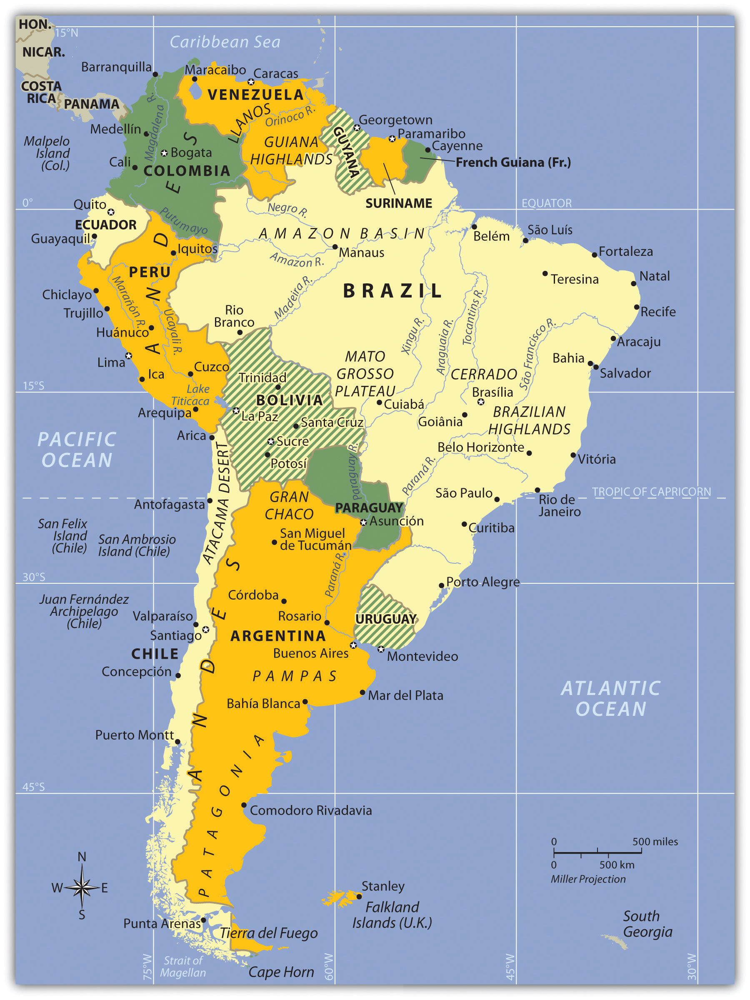
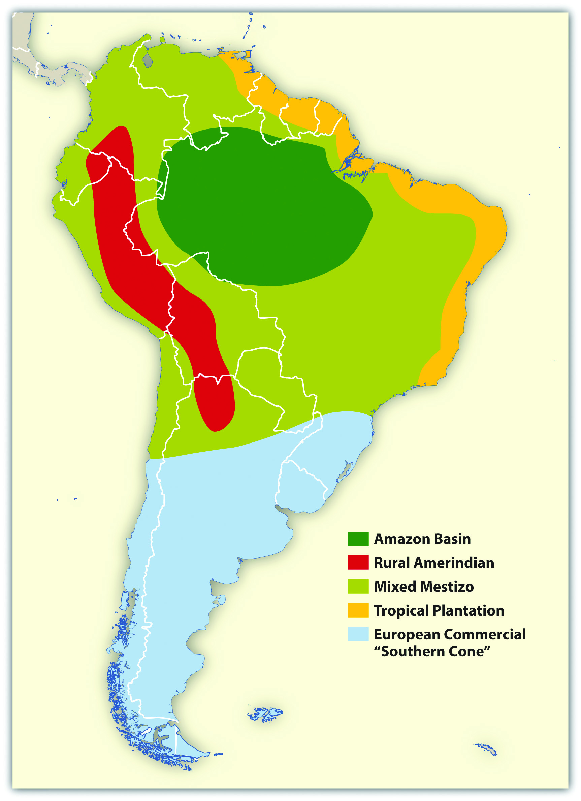
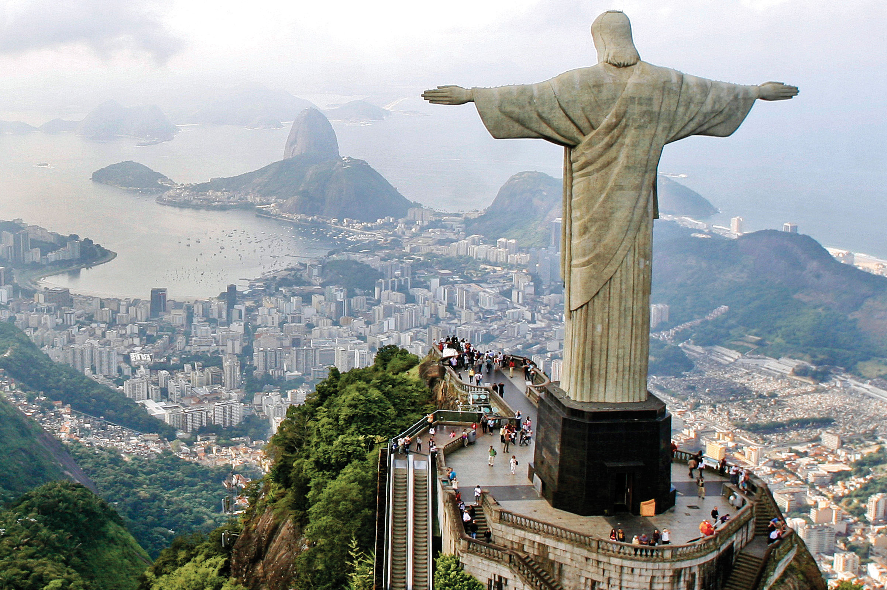
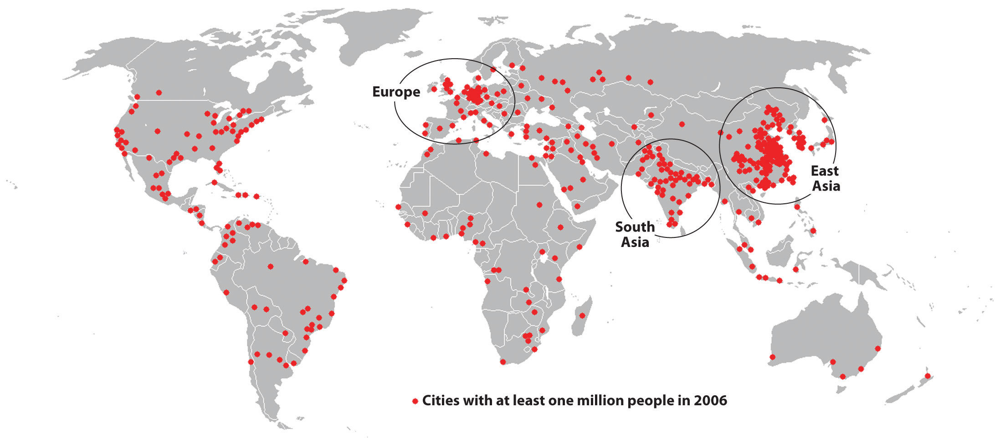

At a Glance
At a Glance
Learning Outcomes
- Describe: The impact of Altitudinal Zonation on settlement and agriculture.
- Analyze: The lasting effects of the Columbian Exchange and colonial land systems.
- Explain: The causes and global consequences of Amazon deforestation.
- Evaluate: Urban challenges, including primate cities and informal settlements (favelas).
- Apply: Geographic concepts to understand the region's vast economic inequality.
Key Terms
Altitudinal Zonation, Columbian Exchange, Mestizo, Hacienda, Favela, Remittances, Primate City, Treaty of Tordesillas, Informal Economy.
Stop & Check
Reveal Answer
Common Misconception
Myth: The Amazon produces 20% of the world's oxygen and is the "lungs of the earth."
Fact: While the Amazon produces massive oxygen, it consumes nearly all of it through respiration and decomposition. Its true global value is as a massive carbon sink (storing CO2) and biodiversity reservoir.
Regional Snapshot: Middle and South America
Latin America is a region of vast physical contrasts - from the world's longest continental mountain range (the Andes) to the largest tropical rainforest (the Amazon). Its history is a record of intense cultural fusion and structural inequality born from centuries of extractive colonial rule.

Interactive Map: The Latin American Realm
Explore the physical spine of the Andes and the vast drainage basin of the Amazon. Click on major megacities like São Paulo and Mexico City to learn about their geographic significance.
Toggle between Physical terrain and Political boundaries. Notice the "Altitudinal Zonation" - how cities in the Andes are often built at high elevations to escape tropical heat.
Physical Geography: Andes, Basins, and Plateaus
Latin America encompasses extraordinary physical diversity, from volcanic Caribbean islands to the world's longest mountain chain to vast river basins and coastal plains.
The Andes Mountains
The Andes Mountains form the world's longest continental mountain chain, stretching 7,000 km along South America's western edge from Venezuela to Tierra del Fuego. Key characteristics:
- Height: Over 50 peaks exceed 6,000 meters; Aconcagua (6,959 m) is the highest peak outside Asia
- Active volcanism: Part of the Pacific "Ring of Fire", Cotopaxi (Ecuador) is one of the world's highest active volcanoes
- Mineral wealth: Gold, silver, copper, tin, mining has been central to Andean economies since the Inca
- Isolation: The rugged terrain historically isolated western South America from the interior
Altitudinal Zonation
In tropical mountains, climate and agriculture change with elevation rather than latitude. The Andes exhibit classic altitudinal zones:
- Tierra Caliente (Hot Land): Sea level, 3,000 ft. Tropical crops: bananas, sugarcane, cacao
- Tierra Templada (Temperate Land): 3,000-6,000 ft. Coffee zone, most populated
- Tierra FrÃa (Cold Land): 6,000-12,000 ft. Potatoes, wheat, corn, includes major cities like Bogotá, Quito
- Tierra Helada (Frozen Land): 12,000-15,000 ft. Grazing animals (llamas, alpacas)
- Tierra Nevada (Snowy Land): Above 15,000 ft. Permanent snow and ice
This explains why many Latin American capitals (Bogotá, Quito, La Paz, Mexico City) are located at high elevations, escaping tropical heat and disease.
The Amazon Basin
The Amazon River drains 40% of South America, an area nearly the size of the continental United States. Facts that illustrate its scale:
- Discharge: The Amazon carries approximately 20% of all river water that flows into the world's oceans
- Width: During rainy season, the river can exceed 160 km (100 miles) wide
- Tributaries: More than 1,100 tributaries, 17 of which are longer than the Rhine River
- Biodiversity: The Amazon rainforest contains approximately 10% of all species on Earth
No bridges cross the main stem of the Amazon River, its width, seasonal flooding, and remote location make bridge construction impractical.
The Altiplano and Lake Titicaca
The Altiplano ("high plain") is a vast plateau between two Andean ranges, averaging 3,750 meters elevation. Lake Titicaca, straddling Peru and Bolivia, is the world's highest navigable lake and has supported human civilization for over 3,000 years. The lake moderates temperatures, making agriculture possible at this extreme elevation.
Other Major Physical Features
- Atacama Desert: The driest place on Earth, some weather stations have never recorded rain. Located in rain shadow of the Andes.
- Brazilian Highlands: Ancient plateau region, major agricultural zone for coffee and soybeans
- Pampas: Temperate grasslands of Argentina and Uruguay, the "breadbasket" producing wheat, cattle, and wine
- Patagonia: Windswept semi-arid region of southern Argentina, sheep ranching and oil extraction
- Llanos: Tropical grasslands of Venezuela and Colombia along the Orinoco River


Middle America: The Caribbean and Central America
The physical geography of Middle America (Mexico, Central America, Caribbean) differs significantly:
- Mexican Plateau: High central plateau (altiplano) where most Mexicans live, including Mexico City at 2,240 m
- Central American Volcanic Chain: Part of the Ring of Fire, creating fertile volcanic soils but earthquake/eruption hazards
- Caribbean Islands: Mix of volcanic islands (Greater and Lesser Antilles) and coral limestone formations (Bahamas)
- Isthmus of Panama: The narrow land bridge connecting North and South America, site of the Panama Canal
Geographic Inquiry
The Amazon rainforest functions as a "carbon sink," absorbing CO2 and regulating global weather patterns. Deforestation for cattle ranching and soy production has accelerated dramatically. If the Amazon passes a "tipping point" and transitions to savanna, what are the potential consequences for global climate? Who bears responsibility for protecting this shared resource?
Data Visualization: Latin America at a Glance
Analyze the following charts to understand two of Latin America's most pressing geographic challenges: environmental destruction and economic inequality. What patterns do you notice, and what geographic factors explain them?
Amazon Deforestation: Annual Forest Loss (km², Brazil)
Notice the dramatic drop after 2004 (Action Plan for Deforestation Prevention) and the spike after 2018. What political and economic events explain these shifts?
GDP per Capita: Latin American Nations (USD, 2024 est.)
The economic gap within Latin America is enormous. How do geography (landlocked vs. coastal), colonial history, and resource endowments explain these differences?
Colonial History: Empires, Conquest, and the Columbian Exchange
Pre-Columbian Civilizations
Before European contact, Latin America was home to sophisticated civilizations:
The Maya (300-900 CE Classical Period)
- Located in southern Mexico, Guatemala, Belize, Honduras
- Built magnificent stone cities with pyramids, observatories, ball courts
- Developed advanced mathematics (concept of zero), astronomy, and accurate calendars
- Descendants still live in the region today, millions speak Mayan languages
The Aztec Empire (1428-1521 CE)
- Controlled central Mexico from their island capital Tenochtitlán (now Mexico City)
- Population estimated at 100,000-250,000, one of the world's largest cities at the time
- Collected tribute from subjugated peoples throughout Mesoamerica
- Conquered by Hernán Cortes in 1521 with Spanish soldiers, indigenous allies, and epidemic disease
The Inca Empire (1438-1533 CE)
- Stretched 4,000 km along the Andes from Ecuador to Chile, the largest empire in pre-Columbian Americas
- Built remarkable infrastructure: 40,000 km of roads, suspension bridges, terraced agriculture
- Capital at Cusco (Peru); Machu Picchu was a royal estate
- Conquered by Francisco Pizarro in 1533 after capturing the Inca emperor
The Columbian Exchange
The encounter between Europe and the Americas initiated a massive exchange of plants, animals, diseases, and people that transformed both hemispheres:
| From Americas to Europe/Africa/Asia | From Europe/Africa/Asia to Americas |
|---|---|
| Potatoes, corn (maize), tomatoes | Wheat, rice, sugarcane, coffee |
| Cacao (chocolate), vanilla, tobacco | Horses, cattle, pigs, sheep |
| Squash, beans, peppers, peanuts | Smallpox, measles, influenza (devastating) |
| Rubber, quinine (malaria treatment) | Christianity, Spanish/Portuguese languages |
Demographic Catastrophe
European diseases devastated indigenous populations who had no immunity. In Mexico, the population collapsed from an estimated 15-25 million in 1519 to approximately 2.5 million by 1600, a decline of 80-90%. This catastrophic population loss fundamentally reshaped Latin American society and created demand for African slave labor.
Colonial Land Systems
Spanish and Portuguese colonizers established two distinct agricultural systems:
- Hacienda (Mainland): Large land grants in the interior, focused on social prestige and self-sufficiency. Indigenous workers remained on the land under a feudal-like system. Less export-oriented.
- Plantation (Rimland): Coastal/Caribbean operations focused on export crops (sugar, tobacco, cotton). Required massive labor, first indigenous, then African slaves. Created the African diaspora in the Americas.
The Treaty of Tordesillas (1494)
To prevent conflict between Spain and Portugal, the Pope drew a line dividing the "New World":
- West of the line: Spanish territory (most of Latin America)
- East of the line: Portuguese territory (Brazil)
This explains why Brazil speaks Portuguese while the rest of Latin America speaks Spanish.
Independence Movements (1810-1830)
Inspired by the American and French Revolutions, Latin American colonies achieved independence:
- Simón BolÃvar: Liberated Venezuela, Colombia, Ecuador, Peru, Bolivia
- Jose de San MartÃn: Liberated Argentina, Chile, Peru
- Miguel Hidalgo: Initiated Mexican independence (1810)
- Brazil: Uniquely, declared independence peacefully in 1822 when the Portuguese prince declared himself Emperor
Human Geography: Colonial Legacies and Urban Challenges
Ethnic Composition: The Cultural Mosaic
Latin America's population reflects the complex mixing of indigenous, European, and African peoples:
- Mestizo: Mixed European and indigenous ancestry, the majority in Mexico, Central America, Colombia, Venezuela, Ecuador
- Mulatto: Mixed European and African ancestry, common in Caribbean and coastal Brazil
- Indigenous: Majority or large minority in Bolivia, Peru, Guatemala, parts of Mexico, Ecuador
- European: Dominant in Argentina, Uruguay, southern Brazil, Chile (due to 19th-century immigration)
- African: Significant populations in Brazil, Caribbean, coastal Colombia/Venezuela
Urbanization and Megacities
Latin America is approximately 81% urbanized, one of the world's most urban regions. Megacities include:
- Mexico City: 21+ million, one of the world's largest metropolitan areas, built on the ruins of Tenochtitlán
- São Paulo: 22+ million, Brazil's economic engine, financial center
- Buenos Aires: 15+ million, cultural capital of the "Southern Cone"
- Rio de Janeiro: 13+ million, famous for Carnival, beaches, and stark inequality
- Lima: 10+ million, Peru's primate city, contains nearly one-third of the national population
Urban Structure: The Spanish Colonial Model
Spanish colonial cities follow a distinctive pattern still visible today:
- Central Plaza: Main square with government buildings, cathedral, elite residences
- Commercial Spine: Main commercial street extending from the plaza
- Concentric Zones: Wealth decreases with distance from center (reverse of North American pattern)
- Informal Settlements: Favelas (Brazil), barrios (Spanish-speaking countries), pueblos jóvenes (Peru) on urban periphery
Urban Dualism
Latin American cities display stark spatial inequality. In Rio de Janeiro, luxury high-rises overlook hillside favelas with inadequate water, sewage, and security. This "urban dualism" reflects the region's persistent income inequality, Latin America has the world's highest Gini coefficients (measures of inequality).


Economic Patterns
Latin American economies share common characteristics shaped by colonial history:
- Primary product exports: Heavy dependence on agricultural commodities (coffee, soybeans, beef) and minerals (copper, iron ore, oil)
- Import substitution: Mid-20th century attempts to develop domestic manufacturing (largely unsuccessful)
- Remittances: Money sent home by migrants, critical income source for Mexico, Central America, Caribbean. Mexico receives $50+ billion annually
- Informal economy: Street vendors, unlicensed businesses, estimated at 50%+ of employment in many countries
Regional Economic Blocs
- Mercosur: Southern Cone customs union (Brazil, Argentina, Uruguay, Paraguay)
- Pacific Alliance: Free trade bloc (Mexico, Colombia, Peru, Chile), the most economically liberal
- CARICOM: Caribbean Community, economic integration among Caribbean nations
- USMCA: Includes Mexico with US and Canada (covered in Chapter 4)
The Panama Canal: A Strategic Chokepoint
The Panama Canal is one of the world's most critical "functional regions." By cutting through the 82-km Isthmus of Panama, it connects the Atlantic and Pacific oceans, fundamentally altering global trade geography.
Historical Geography
- French attempt (1881-1889): Failed due to disease (malaria, yellow fever) and engineering challenges, 22,000 workers died
- US completion (1904-1914): Success came after understanding mosquito-borne disease transmission
- Panamanian control (1999): Canal transferred from US to Panama after 85 years
- Expansion (2016): Third set of locks opened, allowing larger "Neopanamax" ships
Geographic Significance
- Trade route: Shortens New York to San Francisco voyage by 13,000 km (avoiding Cape Horn)
- Global trade: 6% of world trade passes through the canal, 40+ ships daily
- Revenue: Generates $4+ billion annually for Panama
Climate Challenge
The canal operates on freshwater from Gatún Lake, each ship transit uses 200 million liters. Prolonged droughts linked to climate change have reduced lake levels, forcing draft restrictions that limit the number and size of ships. In 2023, severe drought reduced daily transits from 38 to 22 ships, creating global shipping delays.
Questions to Consider:
- How does the "physical geography" of Panama (rainfall, tropical forests, watershed) directly impact the "economic geography" of global trade?
- If the canal's capacity is permanently reduced by climate change, which world regions and industries are most affected?
- What alternatives exist if the Panama Canal cannot handle growing ship sizes and volumes?
- Altitudinal Zonation
- The relationship between higher elevation, cooler temperatures, and distinct vegetation/crop zones in tropical mountains. Explains why many Latin American capitals are at high elevations.
- Columbian Exchange
- The massive transfer of plants, animals, diseases, people, and ideas between the Americas and Europe/Africa following 1492. Transformed both hemispheres.
- Treaty of Tordesillas (1494)
- Papal decree dividing the "New World" between Spain (west) and Portugal (east), explaining why Brazil speaks Portuguese.
- Mestizo
- A person of mixed European and indigenous American ancestry, the majority ethnic category in much of Latin America.
- Hacienda
- Large Spanish colonial land grant in the interior, focused on social prestige and self-sufficiency rather than export production. Indigenous workers lived on the land.
- Plantation
- Colonial agricultural enterprise focused on single cash crops (sugar, tobacco, cotton) for export. Required massive labor, first indigenous, then African slaves.
- Favela
- Brazilian term for an informal urban settlement or shantytown, typically on hillsides or urban periphery, lacking adequate infrastructure.
- Barrio
- Spanish term for neighborhood, often referring to low-income or informal settlements in Latin American cities.
- Remittances
- Money sent by migrants to their families in home countries. Critical income source for Mexico, Central America, and Caribbean, Mexico receives $50+ billion annually.
- Primate City
- A city that dominates a country's urban hierarchy, typically 2-3 times larger than the second city. Examples: Mexico City, Lima, Buenos Aires.
- Maquiladora
- A foreign-owned factory in Mexico that imports components duty-free, assembles products, and exports to the US. Concentrated along the border.
- Informal Economy
- Economic activity outside government regulation or taxation, street vendors, unlicensed businesses. Estimated at 50%+ of employment in some Latin American countries.
- Altiplano
- Spanish for "high plain", the elevated plateau between Andean ranges in Peru and Bolivia, including Lake Titicaca. Average elevation 3,750 meters.
- Land Bridge
- A narrow strip of land connecting two larger landmasses. The Isthmus of Panama connects North and South America and is the site of the Panama Canal.
- Chokepoint
- A narrow passage through which shipping must pass, creating strategic and economic significance. Panama Canal and Strait of Magellan are Latin American examples.
- Dependency Theory
- A theoretical framework arguing that the global economic system is structured so that wealthy "core" nations extract resources and wealth from poorer "periphery" nations, keeping them in a state of underdevelopment. Latin America's colonial experience of exporting raw materials while importing finished goods is a classic example of the dependency relationship.
- Import Substitution Industrialization (ISI)
- A mid-twentieth century economic strategy in which Latin American governments attempted to reduce dependence on imported manufactured goods by developing domestic industries behind protective tariffs and subsidies. Countries such as Brazil, Argentina, and Mexico pursued ISI from the 1930s through the 1970s with mixed results.
- Land Reform
- Government redistribution of agricultural land from large landowners (latifundia) to landless peasants. Land reform has been a recurring and often contentious political issue across Latin America, from Mexico's ejido system after the 1910 Revolution to Bolivia's 1952 reforms and Brazil's ongoing Landless Workers' Movement (MST).
- Latifundia
- Extremely large agricultural estates, often dating to colonial-era land grants, that concentrate land ownership in the hands of a small elite. The latifundia system is widely considered a root cause of persistent rural poverty and inequality across Latin America.
- Megacity
- A metropolitan area with a total population exceeding 10 million people. Latin America contains several of the world's megacities, including Mexico City, Sao Paulo, Buenos Aires, Rio de Janeiro, and Lima, reflecting the region's rapid and concentrated urbanization patterns.
- Monroe Doctrine
- An 1823 United States foreign policy declaration stating that further European colonization or interference in the Americas would be viewed as a hostile act. The Monroe Doctrine became a justification for repeated US political and military intervention in Latin American affairs throughout the nineteenth and twentieth centuries.
- Deforestation
- The permanent removal of forest cover, typically for agricultural expansion, cattle ranching, logging, or infrastructure development. In Latin America, deforestation of the Amazon rainforest is a major global environmental concern because the Amazon functions as a critical carbon sink and biodiversity reservoir.
- Physical extremes define the region: The Andes (world's longest mountain chain), the Amazon (world's largest rainforest), the Atacama (driest desert), and the Pampas (agricultural heartland) create extraordinary environmental diversity.
- Altitudinal zonation matters: In tropical latitudes, elevation determines climate and agricultural potential. Major cities like Bogotá, Quito, and Mexico City are located at high elevations to escape tropical heat.
- Pre-Columbian civilizations were sophisticated: The Maya, Aztec, and Inca built advanced societies with remarkable achievements in mathematics, astronomy, engineering, and governance.
- Colonialism reshaped everything: The Columbian Exchange, demographic catastrophe from disease, African slave trade, and extractive economic systems created lasting patterns of inequality.
- The Treaty of Tordesillas explains the linguistic divide: Spanish dominates most of Latin America; Portuguese dominates Brazil, a legacy of papal division in 1494.
- Extreme urbanization with stark inequality: Latin America is 81% urban, but cities display "urban dualism", modern development adjacent to informal settlements lacking basic services.
- Export dependence continues: Economies remain heavily dependent on primary products (coffee, soybeans, minerals, oil), making them vulnerable to commodity price swings.
- Remittances are economically critical: Money sent home by migrants provides essential income for families and communities, particularly in Mexico, Central America, and the Caribbean.
- The Panama Canal is a global chokepoint: 6% of world trade passes through this narrow isthmus, and climate change threatens its operations.
- Environmental challenges mount: Amazon deforestation, water scarcity, and climate vulnerability threaten both regional and global systems.
Regional Decisions: The Amazon at a Crossroads
Brazil contains approximately 60% of the Amazon rainforest, a global carbon sink that regulates climate for the entire planet. Yet Brazil is also a developing nation with millions of citizens in poverty, and the Amazon's resources represent enormous economic potential. You are a delegate at an International Amazon Summit. Your task: negotiate a policy framework that addresses both environmental protection and economic development.
Your family cleared forest land to grow soybeans. Brazil is now the world's #1 soy exporter. You argue that Brazil has the sovereign right to develop its own resources, just as Europe and North America did.
The Amazon absorbs CO2 that affects global temperatures. You represent nations that have already industrialized and now want to preserve the forest. You offer financial incentives for conservation.
Your people have lived in the Amazon for thousands of years. Deforestation destroys your homeland, culture, and food security. You demand legal recognition of Indigenous territories and veto power over development projects.
30 million Brazilians live in poverty. The Amazon's timber, minerals, and agricultural land represent a path to development. You seek a "sustainable development" compromise that allows controlled extraction.
- Does Brazil have the right to develop the Amazon, even if it harms global climate? How does this relate to the concept of environmental justice?
- Wealthy nations industrialized by exploiting their own natural resources. Is it fair to now restrict developing nations from doing the same?
- What role should payments for ecosystem services (paying Brazil to preserve the forest) play in this negotiation? Who should pay, and how much?
- How does the geographic concept of a commons (a shared resource) apply to the Amazon? Can international law govern a nation's internal territory?
Knowledge Check
Test your understanding of the core concepts covered in this chapter. This quiz consists of multiple-choice questions designed to review key terms, regional patterns, and geographic relationships. Select the best answer for each question to receive immediate feedback.
Loading quiz questions...
Discussion and Reflection Prompts
Use these prompts to deepen your understanding and connect chapter concepts to your own experience and the broader world.
Reflect on Your Learning
- Think about the foods you eat regularly, such as potatoes, tomatoes, chocolate, corn, and chili peppers. These are all products of the Columbian Exchange. How has Latin America shaped your daily life in ways you may not have recognized?
- Latin America is home to the world's largest Catholic population, a legacy of Spanish and Portuguese colonization. How does religion function as a cultural landscape, shaping cities, holidays, and social norms?
- Many Latin American migrants send remittances home to their families. If you were living abroad, how would you feel about this responsibility? What does this tell us about the geographic connections between people and their home regions?
Discuss With Your Peers
- "Latin America is rich in resources but poor in outcomes." Do you agree with this statement? What geographic and historical factors explain the "resource curse" that affects many commodity-dependent economies?
- The Amazon rainforest is often called the "lungs of the Earth." But Brazil argues it has the sovereign right to develop its own territory. How should the international community balance national sovereignty with global environmental responsibility?
- Latin American cities like São Paulo and Mexico City are among the world's largest, yet they contain vast informal settlements (favelas, barrios). Is rapid urbanization a sign of development or a symptom of inequality, or both?
Curriculum Standards Alignment
This chapter aligns with the following National and State geography standards.